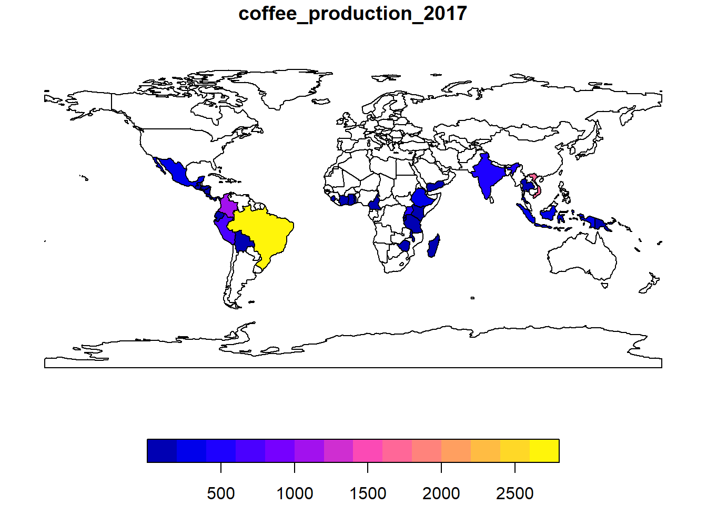
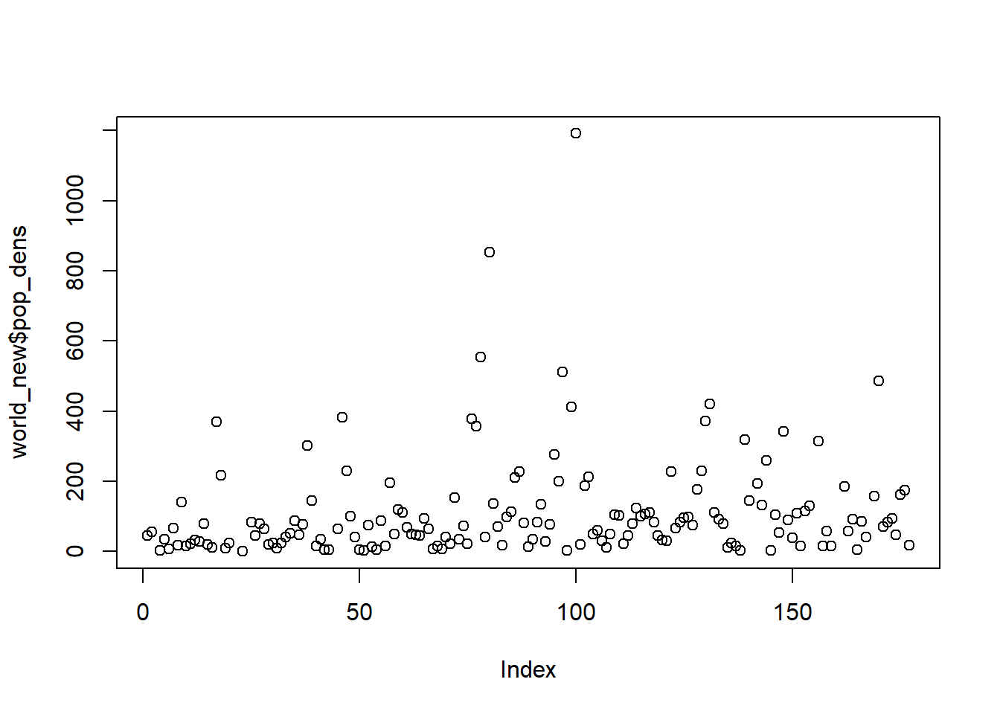
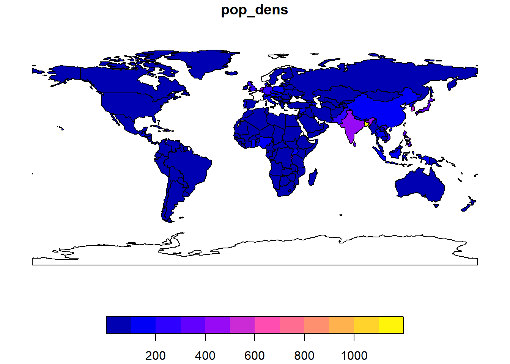
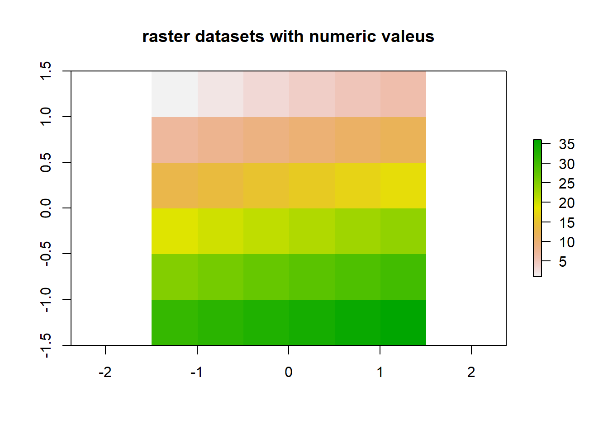
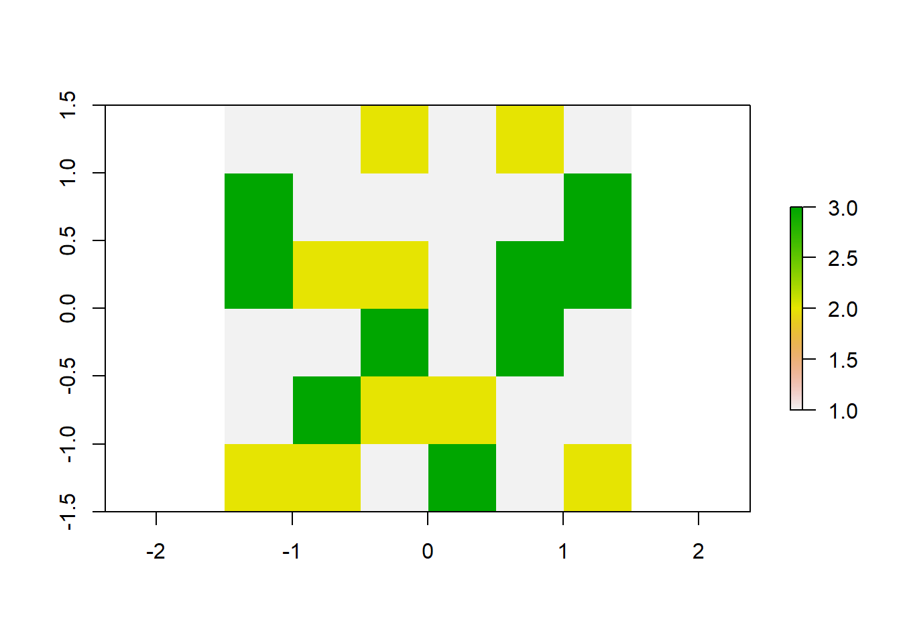

library(sf)
library(raster)
library(dplyr)
library(stringr) # for working with strings (pattern matching)
library(tidyr) # for unite() and separate()
library(spData) # 데이터 세트를 로드|
|
속성 데이터 - 벡터 & 래스터
1 공간 정보 분석 CH3 : Attribute data operations
2 패키지 불러오기
3 3.1 속성데이터 (벡터 vs 래스터)
- 지리공간 벡터 데이터
- 점, 선, 면 등의 리스트로 이뤄진 지리공간 데이터
- 지리공간 데이터 제외한 속성데이터
- sf 객체: 벡터 데이터에서 속성 정보 가져옴, 클래스 지원
- 속성 정보만 가져오기 : st_drop_geometry()
- base R 구문, dplyr : 벡더 데이터 속성 정보의 dim
### sf 객체 methods
methods(class = 'sf') %>% head()[1] "$<-.sf" "[.sf" "[[<-.sf" "aggregate.sf" "anti_join.sf"
[6] "arrange.sf" methods(class = 'sf') %>% tail()[1] "summarise.sf" "transform.sf" "transmute.sf" "ungroup.sf" "unite.sf"
[6] "unnest.sf" length(methods(class = 'sf'))[1] 1234 spData : 세계 나라 데이터(world)
### 10개의 속성 데이터, 1개의 지리기하 열
dim(world)[1] 177 11worldSimple feature collection with 177 features and 10 fields
Geometry type: MULTIPOLYGON
Dimension: XY
Bounding box: xmin: -180 ymin: -89.9 xmax: 180 ymax: 83.64513
Geodetic CRS: WGS 84
# A tibble: 177 × 11
iso_a2 name_l…¹ conti…² regio…³ subre…⁴ type area_…⁵ pop lifeExp gdpPe…⁶
* <chr> <chr> <chr> <chr> <chr> <chr> <dbl> <dbl> <dbl> <dbl>
1 FJ Fiji Oceania Oceania Melane… Sove… 1.93e4 8.86e5 70.0 8222.
2 TZ Tanzania Africa Africa Easter… Sove… 9.33e5 5.22e7 64.2 2402.
3 EH Western… Africa Africa Northe… Inde… 9.63e4 NA NA NA
4 CA Canada North … Americ… Northe… Sove… 1.00e7 3.55e7 82.0 43079.
5 US United … North … Americ… Northe… Coun… 9.51e6 3.19e8 78.8 51922.
6 KZ Kazakhs… Asia Asia Centra… Sove… 2.73e6 1.73e7 71.6 23587.
7 UZ Uzbekis… Asia Asia Centra… Sove… 4.61e5 3.08e7 71.0 5371.
8 PG Papua N… Oceania Oceania Melane… Sove… 4.65e5 7.76e6 65.2 3709.
9 ID Indones… Asia Asia South-… Sove… 1.82e6 2.55e8 68.9 10003.
10 AR Argenti… South … Americ… South … Sove… 2.78e6 4.30e7 76.3 18798.
# … with 167 more rows, 1 more variable: geom <MULTIPOLYGON [°]>, and
# abbreviated variable names ¹name_long, ²continent, ³region_un, ⁴subregion,
# ⁵area_km2, ⁶gdpPercapnames(world) [1] "iso_a2" "name_long" "continent" "region_un" "subregion" "type"
[7] "area_km2" "pop" "lifeExp" "gdpPercap" "geom" 5 sf 객체에서 속성 정보만 가져오기 : st_drop_geometry()
- 점, 선, 면 등의 지리기하 데이터를 리스트로 갖는 geom 컬럼 항상 존재
- geom 컬럼을 제거하고 나머지 속성 정보만으로 d.f 만들 때 사용
- geom 컬럼 : 지리기하 리스트 정보를 가지기때문에 메모리 점유 큼
- 사용할 필요 없으면 웬만하면 제거하기
### geom 컬럼 제거
world_df = st_drop_geometry(world)
world_df# A tibble: 177 × 10
iso_a2 name_l…¹ conti…² regio…³ subre…⁴ type area_…⁵ pop lifeExp gdpPe…⁶
* <chr> <chr> <chr> <chr> <chr> <chr> <dbl> <dbl> <dbl> <dbl>
1 FJ Fiji Oceania Oceania Melane… Sove… 1.93e4 8.86e5 70.0 8222.
2 TZ Tanzania Africa Africa Easter… Sove… 9.33e5 5.22e7 64.2 2402.
3 EH Western… Africa Africa Northe… Inde… 9.63e4 NA NA NA
4 CA Canada North … Americ… Northe… Sove… 1.00e7 3.55e7 82.0 43079.
5 US United … North … Americ… Northe… Coun… 9.51e6 3.19e8 78.8 51922.
6 KZ Kazakhs… Asia Asia Centra… Sove… 2.73e6 1.73e7 71.6 23587.
7 UZ Uzbekis… Asia Asia Centra… Sove… 4.61e5 3.08e7 71.0 5371.
8 PG Papua N… Oceania Oceania Melane… Sove… 4.65e5 7.76e6 65.2 3709.
9 ID Indones… Asia Asia South-… Sove… 1.82e6 2.55e8 68.9 10003.
10 AR Argenti… South … Americ… South … Sove… 2.78e6 4.30e7 76.3 18798.
# … with 167 more rows, and abbreviated variable names ¹name_long, ²continent,
# ³region_un, ⁴subregion, ⁵area_km2, ⁶gdpPercapclass(world_df)[1] "tbl_df" "tbl" "data.frame"names(world_df) [1] "iso_a2" "name_long" "continent" "region_un" "subregion" "type"
[7] "area_km2" "pop" "lifeExp" "gdpPercap"6 Base R 구문으로 벡터 데이터 속성정보의 차원 가져오기
- 행, 열 가져올때 df[i,j], subset() 등 활용
- i행, j열에는 정수로 위치 파악
- j열의 이름 사용
- 논리 벡터 사용가능 subset 등
- dplyr 패키지 : select(), filter(), pull() 등 _ 특정 행, 열의 부분집합 가져오면 끝에 geom 칼럼 따라옴
6.0.1 1. 위치 지정해서 지리공간 벡터 데이터 가져오기
### 1행 ~ 6행 정보
world[1:6,]Simple feature collection with 6 features and 10 fields
Geometry type: MULTIPOLYGON
Dimension: XY
Bounding box: xmin: -180 ymin: -18.28799 xmax: 180 ymax: 83.23324
Geodetic CRS: WGS 84
# A tibble: 6 × 11
iso_a2 name_long conti…¹ regio…² subre…³ type area_…⁴ pop lifeExp gdpPe…⁵
<chr> <chr> <chr> <chr> <chr> <chr> <dbl> <dbl> <dbl> <dbl>
1 FJ Fiji Oceania Oceania Melane… Sove… 1.93e4 8.86e5 70.0 8222.
2 TZ Tanzania Africa Africa Easter… Sove… 9.33e5 5.22e7 64.2 2402.
3 EH Western … Africa Africa Northe… Inde… 9.63e4 NA NA NA
4 CA Canada North … Americ… Northe… Sove… 1.00e7 3.55e7 82.0 43079.
5 US United S… North … Americ… Northe… Coun… 9.51e6 3.19e8 78.8 51922.
6 KZ Kazakhst… Asia Asia Centra… Sove… 2.73e6 1.73e7 71.6 23587.
# … with 1 more variable: geom <MULTIPOLYGON [°]>, and abbreviated variable
# names ¹continent, ²region_un, ³subregion, ⁴area_km2, ⁵gdpPercap### 1열 ~ 3열 정보
world[,1:3]Simple feature collection with 177 features and 3 fields
Geometry type: MULTIPOLYGON
Dimension: XY
Bounding box: xmin: -180 ymin: -89.9 xmax: 180 ymax: 83.64513
Geodetic CRS: WGS 84
# A tibble: 177 × 4
iso_a2 name_long continent geom
<chr> <chr> <chr> <MULTIPOLYGON [°]>
1 FJ Fiji Oceania (((-180 -16.55522, -179.9174 -16.50178…
2 TZ Tanzania Africa (((33.90371 -0.95, 31.86617 -1.02736, …
3 EH Western Sahara Africa (((-8.66559 27.65643, -8.817828 27.656…
4 CA Canada North America (((-132.71 54.04001, -133.18 54.16998,…
5 US United States North America (((-171.7317 63.78252, -171.7911 63.40…
6 KZ Kazakhstan Asia (((87.35997 49.21498, 86.82936 49.8266…
7 UZ Uzbekistan Asia (((55.96819 41.30864, 57.09639 41.3223…
8 PG Papua New Guinea Oceania (((141.0002 -2.600151, 141.0171 -5.859…
9 ID Indonesia Asia (((104.37 -1.084843, 104.0108 -1.05921…
10 AR Argentina South America (((-68.63401 -52.63637, -68.63335 -54.…
# … with 167 more rows6.0.2 2. 열이름 사용해서 지리공간 벡터 데이터 열 가져오기
world[, c('name_long', 'lifeExp')]Simple feature collection with 177 features and 2 fields
Geometry type: MULTIPOLYGON
Dimension: XY
Bounding box: xmin: -180 ymin: -89.9 xmax: 180 ymax: 83.64513
Geodetic CRS: WGS 84
# A tibble: 177 × 3
name_long lifeExp geom
<chr> <dbl> <MULTIPOLYGON [°]>
1 Fiji 70.0 (((-180 -16.55522, -179.9174 -16.50178, -179.7933 -…
2 Tanzania 64.2 (((33.90371 -0.95, 31.86617 -1.02736, 30.76986 -1.0…
3 Western Sahara NA (((-8.66559 27.65643, -8.817828 27.65643, -8.794884…
4 Canada 82.0 (((-132.71 54.04001, -133.18 54.16998, -133.2397 53…
5 United States 78.8 (((-171.7317 63.78252, -171.7911 63.40585, -171.553…
6 Kazakhstan 71.6 (((87.35997 49.21498, 86.82936 49.82667, 85.54127 4…
7 Uzbekistan 71.0 (((55.96819 41.30864, 57.09639 41.32231, 56.93222 4…
8 Papua New Guinea 65.2 (((141.0002 -2.600151, 141.0171 -5.859022, 141.0339…
9 Indonesia 68.9 (((104.37 -1.084843, 104.0108 -1.059212, 103.4376 -…
10 Argentina 76.3 (((-68.63401 -52.63637, -68.63335 -54.8695, -67.562…
# … with 167 more rows6.1 3. 논리 벡터 사용해서 데이터 가져오기
sel_area <- world$area_km2 < 10000
summary(sel_area) Mode FALSE TRUE
logical 170 7 small_countries <- world[sel_area, ]
small_countriesSimple feature collection with 7 features and 10 fields
Geometry type: MULTIPOLYGON
Dimension: XY
Bounding box: xmin: -67.24243 ymin: -16.59785 xmax: 167.8449 ymax: 50.12805
Geodetic CRS: WGS 84
# A tibble: 7 × 11
iso_a2 name_long conti…¹ regio…² subre…³ type area_…⁴ pop lifeExp gdpPe…⁵
<chr> <chr> <chr> <chr> <chr> <chr> <dbl> <dbl> <dbl> <dbl>
1 PR Puerto R… North … Americ… Caribb… Depe… 9225. 3534874 79.4 35066.
2 PS Palestine Asia Asia Wester… Disp… 5037. 4294682 73.1 4320.
3 VU Vanuatu Oceania Oceania Melane… Sove… 7490. 258850 71.7 2892.
4 LU Luxembou… Europe Europe Wester… Sove… 2417. 556319 82.2 93655.
5 <NA> Northern… Asia Asia Wester… Sove… 3786. NA NA NA
6 CY Cyprus Asia Asia Wester… Sove… 6207. 1152309 80.2 29786.
7 TT Trinidad… North … Americ… Caribb… Sove… 7738. 1354493 70.4 31182.
# … with 1 more variable: geom <MULTIPOLYGON [°]>, and abbreviated variable
# names ¹continent, ²region_un, ³subregion, ⁴area_km2, ⁵gdpPercapsmall_countries <- world[world$area_km2 < 10000, ]
small_countriesSimple feature collection with 7 features and 10 fields
Geometry type: MULTIPOLYGON
Dimension: XY
Bounding box: xmin: -67.24243 ymin: -16.59785 xmax: 167.8449 ymax: 50.12805
Geodetic CRS: WGS 84
# A tibble: 7 × 11
iso_a2 name_long conti…¹ regio…² subre…³ type area_…⁴ pop lifeExp gdpPe…⁵
<chr> <chr> <chr> <chr> <chr> <chr> <dbl> <dbl> <dbl> <dbl>
1 PR Puerto R… North … Americ… Caribb… Depe… 9225. 3534874 79.4 35066.
2 PS Palestine Asia Asia Wester… Disp… 5037. 4294682 73.1 4320.
3 VU Vanuatu Oceania Oceania Melane… Sove… 7490. 258850 71.7 2892.
4 LU Luxembou… Europe Europe Wester… Sove… 2417. 556319 82.2 93655.
5 <NA> Northern… Asia Asia Wester… Sove… 3786. NA NA NA
6 CY Cyprus Asia Asia Wester… Sove… 6207. 1152309 80.2 29786.
7 TT Trinidad… North … Americ… Caribb… Sove… 7738. 1354493 70.4 31182.
# … with 1 more variable: geom <MULTIPOLYGON [°]>, and abbreviated variable
# names ¹continent, ²region_un, ³subregion, ⁴area_km2, ⁵gdpPercapsmall_countries <- subset(world, area_km2 < 10000)
small_countriesSimple feature collection with 7 features and 10 fields
Geometry type: MULTIPOLYGON
Dimension: XY
Bounding box: xmin: -67.24243 ymin: -16.59785 xmax: 167.8449 ymax: 50.12805
Geodetic CRS: WGS 84
# A tibble: 7 × 11
iso_a2 name_long conti…¹ regio…² subre…³ type area_…⁴ pop lifeExp gdpPe…⁵
<chr> <chr> <chr> <chr> <chr> <chr> <dbl> <dbl> <dbl> <dbl>
1 PR Puerto R… North … Americ… Caribb… Depe… 9225. 3534874 79.4 35066.
2 PS Palestine Asia Asia Wester… Disp… 5037. 4294682 73.1 4320.
3 VU Vanuatu Oceania Oceania Melane… Sove… 7490. 258850 71.7 2892.
4 LU Luxembou… Europe Europe Wester… Sove… 2417. 556319 82.2 93655.
5 <NA> Northern… Asia Asia Wester… Sove… 3786. NA NA NA
6 CY Cyprus Asia Asia Wester… Sove… 6207. 1152309 80.2 29786.
7 TT Trinidad… North … Americ… Caribb… Sove… 7738. 1354493 70.4 31182.
# … with 1 more variable: geom <MULTIPOLYGON [°]>, and abbreviated variable
# names ¹continent, ²region_un, ³subregion, ⁴area_km2, ⁵gdpPercap7 dplyr 패키지로 벡터 데이터 속성정보 차원 가져오기
- 가독성 좋고 속도 빠름
- 체인 (%>%) 사용가능
- select(), slice(), filter(), pull() 등의 함수 사용가능
### select로 강력하게 지정가능
# 선택지정
world1 <- select(world, name_long, pop)
names(world1)[1] "name_long" "pop" "geom" # 범위지정
world2 <- select(world, name_long:pop)
names(world2)[1] "name_long" "continent" "region_un" "subregion" "type" "area_km2"
[7] "pop" "geom" # 컬럼 번호로 선택지정
world3 <- select(world,2,7)
names(world3)[1] "name_long" "area_km2" "geom" # 특정 컬럼 제외
world4 <- select(world, -subregion, -area_km2)
names(world4)[1] "iso_a2" "name_long" "continent" "region_un" "type" "pop"
[7] "lifeExp" "gdpPercap" "geom" # 컬럼 이름 재설정
world5 <- select(world, name_long, population = pop)
names(world5)[1] "name_long" "population" "geom" # 특정 단어가 포함된 열 추출
world6 <- select(world, contains('Ex'))
names(world6)[1] "lifeExp" "geom" # 특정 단어로 시작하는 열 추출
world7 <- select(world, starts_with('life'))
names(world7)[1] "lifeExp" "geom" # 특정 단어로 끝나는 열 추출
world8 <- select(world, ends_with('Exp'))
names(world8)[1] "lifeExp" "geom" # 특정 단어의 소문자 or 대문자 포함된 열 추출
world9 <- select(world, matches("[p]"))
names(world9)[1] "type" "pop" "lifeExp" "gdpPercap" "geom" ### num_range() 함수
x1 <- c(1:5)
x2 <- c(6:10)
x3 <- c(11:15)
x4 <- c(16:20)
x5 <- c(21:25)
df <- data.frame(x1, x2, x3, x4, x5)
df x1 x2 x3 x4 x5
1 1 6 11 16 21
2 2 7 12 17 22
3 3 8 13 18 23
4 4 9 14 19 24
5 5 10 15 20 25df2 <- select(df, num_range("x", 1:3))
df2 x1 x2 x3
1 1 6 11
2 2 7 12
3 3 8 13
4 4 9 14
5 5 10 15### filter() 함수 subset과 비슷
# 조건 걸기
world10 <- filter(world, lifeExp > 82)
world10Simple feature collection with 9 features and 10 fields
Geometry type: MULTIPOLYGON
Dimension: XY
Bounding box: xmin: -24.32618 ymin: -43.6346 xmax: 153.5695 ymax: 69.10625
Geodetic CRS: WGS 84
# A tibble: 9 × 11
iso_a2 name_long conti…¹ regio…² subre…³ type area_…⁴ pop lifeExp gdpPe…⁵
* <chr> <chr> <chr> <chr> <chr> <chr> <dbl> <dbl> <dbl> <dbl>
1 IL Israel Asia Asia Wester… Coun… 2.30e4 8.22e6 82.2 31702.
2 SE Sweden Europe Europe Northe… Sove… 4.51e5 9.70e6 82.3 44168.
3 CH Switzerla… Europe Europe Wester… Sove… 4.62e4 8.19e6 83.2 57218.
4 LU Luxembourg Europe Europe Wester… Sove… 2.42e3 5.56e5 82.2 93655.
5 ES Spain Europe Europe Southe… Sove… 5.02e5 4.65e7 83.2 31195.
6 AU Australia Oceania Oceania Austra… Coun… 7.69e6 2.35e7 82.3 43547.
7 IT Italy Europe Europe Southe… Sove… 3.15e5 6.08e7 83.1 33946.
8 IS Iceland Europe Europe Northe… Sove… 1.08e5 3.27e5 82.9 41701.
9 JP Japan Asia Asia Easter… Sove… 4.05e5 1.27e8 83.6 37337.
# … with 1 more variable: geom <MULTIPOLYGON [°]>, and abbreviated variable
# names ¹continent, ²region_un, ³subregion, ⁴area_km2, ⁵gdpPercap### 체인(%>%) 활용, 가독성 좋음
world11 <- world %>%
filter(continent == "Asia") %>%
select(name_long, continent) %>%
slice(1:5)
world11Simple feature collection with 5 features and 2 fields
Geometry type: MULTIPOLYGON
Dimension: XY
Bounding box: xmin: 34.26543 ymin: -10.35999 xmax: 141.0339 ymax: 55.38525
Geodetic CRS: WGS 84
# A tibble: 5 × 3
name_long continent geom
<chr> <chr> <MULTIPOLYGON [°]>
1 Kazakhstan Asia (((87.35997 49.21498, 86.82936 49.82667, 85.54127 49.69…
2 Uzbekistan Asia (((55.96819 41.30864, 57.09639 41.32231, 56.93222 41.82…
3 Indonesia Asia (((104.37 -1.084843, 104.0108 -1.059212, 103.4376 -0.71…
4 Timor-Leste Asia (((124.9687 -8.89279, 125.07 -9.089987, 125.0885 -9.393…
5 Israel Asia (((35.71992 32.70919, 35.7008 32.71601, 35.8364 32.8681…### aggregate() 함수 사용해서 그룹별로 집계
# x(속성정보:인구) ~ group(그룹:대륙), sum집계
world_agg1 <- aggregate(pop ~ continent, FUN = sum, data = world, na.rm = TRUE)
world_agg1 continent pop
1 Africa 1154946633
2 Asia 4311408059
3 Europe 669036256
4 North America 565028684
5 Oceania 37757833
6 South America 412060811str(world_agg1)'data.frame': 6 obs. of 2 variables:
$ continent: chr "Africa" "Asia" "Europe" "North America" ...
$ pop : num 1.15e+09 4.31e+09 6.69e+08 5.65e+08 3.78e+07 ...class(world_agg1)[1] "data.frame"### 2번째 방법
world_agg2 <- aggregate(world["pop"], by = list(world$continent),
FUN = sum, na.rm = TRUE)
world_agg2Simple feature collection with 8 features and 2 fields
Attribute-geometry relationship: 0 constant, 1 aggregate, 1 identity
Geometry type: GEOMETRY
Dimension: XY
Bounding box: xmin: -180 ymin: -89.9 xmax: 180 ymax: 83.64513
Geodetic CRS: WGS 84
Group.1 pop geometry
1 Africa 1154946633 MULTIPOLYGON (((11.91496 -5...
2 Antarctica 0 MULTIPOLYGON (((-61.13898 -...
3 Asia 4311408059 MULTIPOLYGON (((120.295 -10...
4 Europe 669036256 MULTIPOLYGON (((-53.77852 2...
5 North America 565028684 MULTIPOLYGON (((-80.9473 8....
6 Oceania 37757833 MULTIPOLYGON (((171.9487 -4...
7 Seven seas (open ocean) 0 POLYGON ((68.935 -48.625, 6...
8 South America 412060811 MULTIPOLYGON (((-57.75 -51....class(world_agg2)[1] "sf" "data.frame"# sf 객체는 집계 결과가 sf 객체로 반환
world['pop']Simple feature collection with 177 features and 1 field
Geometry type: MULTIPOLYGON
Dimension: XY
Bounding box: xmin: -180 ymin: -89.9 xmax: 180 ymax: 83.64513
Geodetic CRS: WGS 84
# A tibble: 177 × 2
pop geom
<dbl> <MULTIPOLYGON [°]>
1 885806 (((-180 -16.55522, -179.9174 -16.50178, -179.7933 -16.02088, -180 …
2 52234869 (((33.90371 -0.95, 31.86617 -1.02736, 30.76986 -1.01455, 30.4191 -…
3 NA (((-8.66559 27.65643, -8.817828 27.65643, -8.794884 27.1207, -9.41…
4 35535348 (((-132.71 54.04001, -133.18 54.16998, -133.2397 53.85108, -133.05…
5 318622525 (((-171.7317 63.78252, -171.7911 63.40585, -171.5531 63.31779, -17…
6 17288285 (((87.35997 49.21498, 86.82936 49.82667, 85.54127 49.69286, 85.115…
7 30757700 (((55.96819 41.30864, 57.09639 41.32231, 56.93222 41.82603, 57.786…
8 7755785 (((141.0002 -2.600151, 141.0171 -5.859022, 141.0339 -9.117893, 142…
9 255131116 (((104.37 -1.084843, 104.0108 -1.059212, 103.4376 -0.7119459, 103.…
10 42981515 (((-68.63401 -52.63637, -68.63335 -54.8695, -67.56244 -54.87001, -…
# … with 167 more rowsclass(world['pop'])[1] "sf" "tbl_df" "tbl" "data.frame"# 숫자형 벡터는 aggregate 적용하면 d.f로 반환
world$pop %>% head()[1] 885806 52234869 NA 35535348 318622525 17288285class(world$pop)[1] "numeric"### group_by + summarize : aggregate보다 가독성 좋음
# 대륙별 인구의 합계
world_agg3 <- world %>%
group_by(continent) %>%
summarize(pop = sum(pop, na.rm = TRUE))
world_agg3Simple feature collection with 8 features and 2 fields
Geometry type: GEOMETRY
Dimension: XY
Bounding box: xmin: -180 ymin: -89.9 xmax: 180 ymax: 83.64513
Geodetic CRS: WGS 84
# A tibble: 8 × 3
continent pop geom
<chr> <dbl> <GEOMETRY [°]>
1 Africa 1154946633 MULTIPOLYGON (((36.86623 22, 36.69069 22.2…
2 Antarctica 0 MULTIPOLYGON (((-180 -89.9, 180 -89.9, 180…
3 Asia 4311408059 MULTIPOLYGON (((36.14976 35.82153, 35.9050…
4 Europe 669036256 MULTIPOLYGON (((26.29 35.29999, 25.74502 3…
5 North America 565028684 MULTIPOLYGON (((-82.26815 23.18861, -82.51…
6 Oceania 37757833 MULTIPOLYGON (((166.7932 -15.66881, 167.00…
7 Seven seas (open ocean) 0 POLYGON ((68.935 -48.625, 68.8675 -48.83, …
8 South America 412060811 MULTIPOLYGON (((-66.95992 -54.89681, -66.4…# 대륙별 인구의 합계 + 대륙별 국가 수
world_agg4 <- world %>%
group_by(continent) %>%
summarize(pop = sum(pop, na.rm = TRUE), n_countries = n())
world_agg4Simple feature collection with 8 features and 3 fields
Geometry type: GEOMETRY
Dimension: XY
Bounding box: xmin: -180 ymin: -89.9 xmax: 180 ymax: 83.64513
Geodetic CRS: WGS 84
# A tibble: 8 × 4
continent pop n_countries geom
<chr> <dbl> <int> <GEOMETRY [°]>
1 Africa 1154946633 51 MULTIPOLYGON (((36.86623 22, 3…
2 Antarctica 0 1 MULTIPOLYGON (((-180 -89.9, 18…
3 Asia 4311408059 47 MULTIPOLYGON (((36.14976 35.82…
4 Europe 669036256 39 MULTIPOLYGON (((26.29 35.29999…
5 North America 565028684 18 MULTIPOLYGON (((-82.26815 23.1…
6 Oceania 37757833 7 MULTIPOLYGON (((166.7932 -15.6…
7 Seven seas (open ocean) 0 1 POLYGON ((68.935 -48.625, 68.8…
8 South America 412060811 13 MULTIPOLYGON (((-66.95992 -54.…# 대륙별 인구의 합계 + 대륙별 국가 수 + 인구 탑3 대륙 + 인구 내림차순
world %>%
select(pop, continent) %>%
group_by(continent) %>%
summarize(pop = sum(pop, na.rm = TRUE), n_countries = n()) %>%
top_n(n = 3, wt = pop) %>%
arrange(desc(pop)) %>%
st_drop_geometry() # geom 컬럼 제거# A tibble: 3 × 3
continent pop n_countries
* <chr> <dbl> <int>
1 Asia 4311408059 47
2 Africa 1154946633 51
3 Europe 669036256 398 data.table로 벡터 데이터의 속성정보 그룹별 집계
- data.table 데이터 구조를 조작, 관리, 처리할 때 사용. 간결성
#install.packages("data.table")
library(data.table)
Attaching package: 'data.table'The following objects are masked from 'package:dplyr':
between, first, lastThe following object is masked from 'package:raster':
shiftworld_dt <- data.table(world)
world_dt iso_a2 name_long continent region_un subregion
1: FJ Fiji Oceania Oceania Melanesia
2: TZ Tanzania Africa Africa Eastern Africa
3: EH Western Sahara Africa Africa Northern Africa
4: CA Canada North America Americas Northern America
5: US United States North America Americas Northern America
---
173: RS Serbia Europe Europe Southern Europe
174: ME Montenegro Europe Europe Southern Europe
175: XK Kosovo Europe Europe Southern Europe
176: TT Trinidad and Tobago North America Americas Caribbean
177: SS South Sudan Africa Africa Eastern Africa
type area_km2 pop lifeExp gdpPercap geom
1: Sovereign country 19289.97 885806 69.96000 8222.254 <XY[3]>
2: Sovereign country 932745.79 52234869 64.16300 2402.099 <XY[1]>
3: Indeterminate 96270.60 NA NA NA <XY[1]>
4: Sovereign country 10036042.98 35535348 81.95305 43079.143 <XY[30]>
5: Country 9510743.74 318622525 78.84146 51921.985 <XY[10]>
---
173: Sovereign country 76388.61 7130576 75.33659 13112.909 <XY[1]>
174: Sovereign country 13443.68 621810 76.71200 14796.635 <XY[1]>
175: Sovereign country 11230.26 1821800 71.09756 8698.292 <XY[1]>
176: Sovereign country 7737.81 1354493 70.42600 31181.821 <XY[1]>
177: Sovereign country 624909.10 11530971 55.81700 1935.879 <XY[1]># 간결하게 top3 대륙 추출
world_dt[, .(pop = sum(pop, na.rm = TRUE), n = .N), by = list(continent)][order(-pop)][1:3] continent pop n
1: Asia 4311408059 47
2: Africa 1154946633 51
3: Europe 669036256 399 두개의 지리 벡터 데이터 테이블 join 하기
### name_long 컬럼 기준으로 join
world_coffee <- left_join(world, coffee_data) # by='name_long'Joining with `by = join_by(name_long)`world_coffeeSimple feature collection with 177 features and 12 fields
Geometry type: MULTIPOLYGON
Dimension: XY
Bounding box: xmin: -180 ymin: -89.9 xmax: 180 ymax: 83.64513
Geodetic CRS: WGS 84
# A tibble: 177 × 13
iso_a2 name_l…¹ conti…² regio…³ subre…⁴ type area_…⁵ pop lifeExp gdpPe…⁶
<chr> <chr> <chr> <chr> <chr> <chr> <dbl> <dbl> <dbl> <dbl>
1 FJ Fiji Oceania Oceania Melane… Sove… 1.93e4 8.86e5 70.0 8222.
2 TZ Tanzania Africa Africa Easter… Sove… 9.33e5 5.22e7 64.2 2402.
3 EH Western… Africa Africa Northe… Inde… 9.63e4 NA NA NA
4 CA Canada North … Americ… Northe… Sove… 1.00e7 3.55e7 82.0 43079.
5 US United … North … Americ… Northe… Coun… 9.51e6 3.19e8 78.8 51922.
6 KZ Kazakhs… Asia Asia Centra… Sove… 2.73e6 1.73e7 71.6 23587.
7 UZ Uzbekis… Asia Asia Centra… Sove… 4.61e5 3.08e7 71.0 5371.
8 PG Papua N… Oceania Oceania Melane… Sove… 4.65e5 7.76e6 65.2 3709.
9 ID Indones… Asia Asia South-… Sove… 1.82e6 2.55e8 68.9 10003.
10 AR Argenti… South … Americ… South … Sove… 2.78e6 4.30e7 76.3 18798.
# … with 167 more rows, 3 more variables: geom <MULTIPOLYGON [°]>,
# coffee_production_2016 <int>, coffee_production_2017 <int>, and abbreviated
# variable names ¹name_long, ²continent, ³region_un, ⁴subregion, ⁵area_km2,
# ⁶gdpPercapclass(world_coffee)[1] "sf" "tbl_df" "tbl" "data.frame"names(world_coffee) [1] "iso_a2" "name_long" "continent"
[4] "region_un" "subregion" "type"
[7] "area_km2" "pop" "lifeExp"
[10] "gdpPercap" "geom" "coffee_production_2016"
[13] "coffee_production_2017"plot(world_coffee["coffee_production_2017"])
### 두 데이터 셋에 같은 이름의 컬럼이 없는 경우
# coffee_data의 name_long변수 이름을 nm으로 변경
coffee_renamed <- rename(coffee_data, nm = name_long)
# by 사용하여 결합 변수를 지정하여 다른이름변수를 기준으로 조인하기
world_coffee2 <- left_join(world, coffee_renamed, by = c(name_long = "nm"))
world_coffee2Simple feature collection with 177 features and 12 fields
Geometry type: MULTIPOLYGON
Dimension: XY
Bounding box: xmin: -180 ymin: -89.9 xmax: 180 ymax: 83.64513
Geodetic CRS: WGS 84
# A tibble: 177 × 13
iso_a2 name_l…¹ conti…² regio…³ subre…⁴ type area_…⁵ pop lifeExp gdpPe…⁶
<chr> <chr> <chr> <chr> <chr> <chr> <dbl> <dbl> <dbl> <dbl>
1 FJ Fiji Oceania Oceania Melane… Sove… 1.93e4 8.86e5 70.0 8222.
2 TZ Tanzania Africa Africa Easter… Sove… 9.33e5 5.22e7 64.2 2402.
3 EH Western… Africa Africa Northe… Inde… 9.63e4 NA NA NA
4 CA Canada North … Americ… Northe… Sove… 1.00e7 3.55e7 82.0 43079.
5 US United … North … Americ… Northe… Coun… 9.51e6 3.19e8 78.8 51922.
6 KZ Kazakhs… Asia Asia Centra… Sove… 2.73e6 1.73e7 71.6 23587.
7 UZ Uzbekis… Asia Asia Centra… Sove… 4.61e5 3.08e7 71.0 5371.
8 PG Papua N… Oceania Oceania Melane… Sove… 4.65e5 7.76e6 65.2 3709.
9 ID Indones… Asia Asia South-… Sove… 1.82e6 2.55e8 68.9 10003.
10 AR Argenti… South … Americ… South … Sove… 2.78e6 4.30e7 76.3 18798.
# … with 167 more rows, 3 more variables: geom <MULTIPOLYGON [°]>,
# coffee_production_2016 <int>, coffee_production_2017 <int>, and abbreviated
# variable names ¹name_long, ²continent, ³region_un, ⁴subregion, ⁵area_km2,
# ⁶gdpPercap### inner_join (left_join과 다른점 : 공통된 값이 있는 행만 살림)
world_coffee_inner <- inner_join(world, coffee_data)Joining with `by = join_by(name_long)`world_coffee_innerSimple feature collection with 45 features and 12 fields
Geometry type: MULTIPOLYGON
Dimension: XY
Bounding box: xmin: -117.1278 ymin: -33.76838 xmax: 156.02 ymax: 35.49401
Geodetic CRS: WGS 84
# A tibble: 45 × 13
iso_a2 name_long conti…¹ regio…² subre…³ type area_…⁴ pop lifeExp gdpPe…⁵
<chr> <chr> <chr> <chr> <chr> <chr> <dbl> <dbl> <dbl> <dbl>
1 TZ Tanzania Africa Africa Easter… Sove… 9.33e5 5.22e7 64.2 2402.
2 PG Papua Ne… Oceania Oceania Melane… Sove… 4.65e5 7.76e6 65.2 3709.
3 ID Indonesia Asia Asia South-… Sove… 1.82e6 2.55e8 68.9 10003.
4 KE Kenya Africa Africa Easter… Sove… 5.91e5 4.60e7 66.2 2753.
5 DO Dominica… North … Americ… Caribb… Sove… 4.82e4 1.04e7 73.5 12663.
6 TL Timor-Le… Asia Asia South-… Sove… 1.47e4 1.21e6 68.3 6263.
7 MX Mexico North … Americ… Centra… Sove… 1.97e6 1.24e8 76.8 16623.
8 BR Brazil South … Americ… South … Sove… 8.51e6 2.04e8 75.0 15374.
9 BO Bolivia South … Americ… South … Sove… 1.09e6 1.06e7 68.4 6325.
10 PE Peru South … Americ… South … Sove… 1.31e6 3.10e7 74.5 11548.
# … with 35 more rows, 3 more variables: geom <MULTIPOLYGON [°]>,
# coffee_production_2016 <int>, coffee_production_2017 <int>, and abbreviated
# variable names ¹continent, ²region_un, ³subregion, ⁴area_km2, ⁵gdpPercap### 비교
dim(world_coffee_inner)[1] 45 13dim(world_coffee)[1] 177 13nrow(coffee_data)[1] 47### setdiff(x,y) : x에서 y에는 없는 데이터 추출
setdiff(coffee_data$name_long, world$name_long)[1] "Congo, Dem. Rep. of" "Others" ### 문자열 추출 (Dem으로 시작, Congo로 끝나는 단어 추출)
str_subset(world$name_long, 'Dem*.+Congo')[1] "Democratic Republic of the Congo"### grepl : 문자열에서 특정 문자열 지정
# 이름 동일하게 변경
coffee_data$name_long[grepl("Congo,", coffee_data$name_long)] <-
str_subset(world$name_long, "Dem*.+Congo")
str_subset(coffee_data$name_long, 'Dem*.+Congo')[1] "Democratic Republic of the Congo"# 46개의 국가 모두 반환
world_coffee_match <- inner_join(world, coffee_data)Joining with `by = join_by(name_long)`dim(world_coffee_match)[1] 46 13### left_join(x,y) : x기준으로 y 병합
coffee_world = left_join(world, coffee_data)Joining with `by = join_by(name_long)`dim(coffee_world)[1] 177 13coffee_world2 = left_join(coffee_data, world)Joining with `by = join_by(name_long)`dim(coffee_world2)[1] 47 1310 지리 벡터 데이터의 새로운 속성 만들기/지리정보 제거하기
### 원본 데이터 덮어쓰기 방지
world_new <- world
### 새로운 속성 pop_dens 생성 (Km2 면적당 인구밀도)
world_new$pop_dens <- world_new$pop / world_new$area_km2
### 속성값으로 보기 vs 지도상으로 보기(geom 정보가 있기때문)
plot(world_new$pop_dens)
plot(world_new['pop_dens'])
### dplyr로 새로운 속성 만들기
# mutate
world_new <- world_new %>% mutate(pop_dens2 = pop / area_km2)
# transmute : 기존 열 모두 제거, 새로 만든 열 + geom 열만 반환
world_new <- world %>% transmute(pop_dens3 = pop/area_km2)
world_new %>% head()Simple feature collection with 6 features and 1 field
Geometry type: MULTIPOLYGON
Dimension: XY
Bounding box: xmin: -180 ymin: -18.28799 xmax: 180 ymax: 83.23324
Geodetic CRS: WGS 84
# A tibble: 6 × 2
pop_dens3 geom
<dbl> <MULTIPOLYGON [°]>
1 45.9 (((-180 -16.55522, -179.9174 -16.50178, -179.7933 -16.02088, -180 -…
2 56.0 (((33.90371 -0.95, 31.86617 -1.02736, 30.76986 -1.01455, 30.4191 -1…
3 NA (((-8.66559 27.65643, -8.817828 27.65643, -8.794884 27.1207, -9.413…
4 3.54 (((-132.71 54.04001, -133.18 54.16998, -133.2397 53.85108, -133.054…
5 33.5 (((-171.7317 63.78252, -171.7911 63.40585, -171.5531 63.31779, -170…
6 6.33 (((87.35997 49.21498, 86.82936 49.82667, 85.54127 49.69286, 85.1155…### tidyr로 기존 속성 합치거나 분리하기
### unite()
# con_reg : continent + region_un 합치고 ':' 로 분리, 합쳐진 열들 remove
world_unite <- world %>%
unite("con_reg", continent:region_un, sep = ":", remove = TRUE)
world_uniteSimple feature collection with 177 features and 9 fields
Geometry type: MULTIPOLYGON
Dimension: XY
Bounding box: xmin: -180 ymin: -89.9 xmax: 180 ymax: 83.64513
Geodetic CRS: WGS 84
# A tibble: 177 × 10
iso_a2 name_long con_reg subre…¹ type area_…² pop lifeExp gdpPe…³
<chr> <chr> <chr> <chr> <chr> <dbl> <dbl> <dbl> <dbl>
1 FJ Fiji Oceani… Melane… Sove… 1.93e4 8.86e5 70.0 8222.
2 TZ Tanzania Africa… Easter… Sove… 9.33e5 5.22e7 64.2 2402.
3 EH Western Sahara Africa… Northe… Inde… 9.63e4 NA NA NA
4 CA Canada North … Northe… Sove… 1.00e7 3.55e7 82.0 43079.
5 US United States North … Northe… Coun… 9.51e6 3.19e8 78.8 51922.
6 KZ Kazakhstan Asia:A… Centra… Sove… 2.73e6 1.73e7 71.6 23587.
7 UZ Uzbekistan Asia:A… Centra… Sove… 4.61e5 3.08e7 71.0 5371.
8 PG Papua New Guinea Oceani… Melane… Sove… 4.65e5 7.76e6 65.2 3709.
9 ID Indonesia Asia:A… South-… Sove… 1.82e6 2.55e8 68.9 10003.
10 AR Argentina South … South … Sove… 2.78e6 4.30e7 76.3 18798.
# … with 167 more rows, 1 more variable: geom <MULTIPOLYGON [°]>, and
# abbreviated variable names ¹subregion, ²area_km2, ³gdpPercap# 합쳐진 열들 제거X
world_unite2 <- world %>%
unite("con_reg", continent:region_un, sep = ":", remove = FALSE)
world_unite2Simple feature collection with 177 features and 11 fields
Geometry type: MULTIPOLYGON
Dimension: XY
Bounding box: xmin: -180 ymin: -89.9 xmax: 180 ymax: 83.64513
Geodetic CRS: WGS 84
# A tibble: 177 × 12
iso_a2 name_l…¹ con_reg conti…² regio…³ subre…⁴ type area_…⁵ pop lifeExp
<chr> <chr> <chr> <chr> <chr> <chr> <chr> <dbl> <dbl> <dbl>
1 FJ Fiji Oceani… Oceania Oceania Melane… Sove… 1.93e4 8.86e5 70.0
2 TZ Tanzania Africa… Africa Africa Easter… Sove… 9.33e5 5.22e7 64.2
3 EH Western… Africa… Africa Africa Northe… Inde… 9.63e4 NA NA
4 CA Canada North … North … Americ… Northe… Sove… 1.00e7 3.55e7 82.0
5 US United … North … North … Americ… Northe… Coun… 9.51e6 3.19e8 78.8
6 KZ Kazakhs… Asia:A… Asia Asia Centra… Sove… 2.73e6 1.73e7 71.6
7 UZ Uzbekis… Asia:A… Asia Asia Centra… Sove… 4.61e5 3.08e7 71.0
8 PG Papua N… Oceani… Oceania Oceania Melane… Sove… 4.65e5 7.76e6 65.2
9 ID Indones… Asia:A… Asia Asia South-… Sove… 1.82e6 2.55e8 68.9
10 AR Argenti… South … South … Americ… South … Sove… 2.78e6 4.30e7 76.3
# … with 167 more rows, 2 more variables: gdpPercap <dbl>,
# geom <MULTIPOLYGON [°]>, and abbreviated variable names ¹name_long,
# ²continent, ³region_un, ⁴subregion, ⁵area_km2### separate()
# con_reg를 continent, region_un로 분리
world_separate <- world_unite %>%
separate(con_reg, c("continent", "region_un"), sep = ':')
world_separateSimple feature collection with 177 features and 10 fields
Geometry type: MULTIPOLYGON
Dimension: XY
Bounding box: xmin: -180 ymin: -89.9 xmax: 180 ymax: 83.64513
Geodetic CRS: WGS 84
# A tibble: 177 × 11
iso_a2 name_l…¹ conti…² regio…³ subre…⁴ type area_…⁵ pop lifeExp gdpPe…⁶
<chr> <chr> <chr> <chr> <chr> <chr> <dbl> <dbl> <dbl> <dbl>
1 FJ Fiji Oceania Oceania Melane… Sove… 1.93e4 8.86e5 70.0 8222.
2 TZ Tanzania Africa Africa Easter… Sove… 9.33e5 5.22e7 64.2 2402.
3 EH Western… Africa Africa Northe… Inde… 9.63e4 NA NA NA
4 CA Canada North … Americ… Northe… Sove… 1.00e7 3.55e7 82.0 43079.
5 US United … North … Americ… Northe… Coun… 9.51e6 3.19e8 78.8 51922.
6 KZ Kazakhs… Asia Asia Centra… Sove… 2.73e6 1.73e7 71.6 23587.
7 UZ Uzbekis… Asia Asia Centra… Sove… 4.61e5 3.08e7 71.0 5371.
8 PG Papua N… Oceania Oceania Melane… Sove… 4.65e5 7.76e6 65.2 3709.
9 ID Indones… Asia Asia South-… Sove… 1.82e6 2.55e8 68.9 10003.
10 AR Argenti… South … Americ… South … Sove… 2.78e6 4.30e7 76.3 18798.
# … with 167 more rows, 1 more variable: geom <MULTIPOLYGON [°]>, and
# abbreviated variable names ¹name_long, ²continent, ³region_un, ⁴subregion,
# ⁵area_km2, ⁶gdpPercap### 데이터 속성 이름 바꾸기
# rename(x:new = y:old)
world %>% rename(name = name_long)Simple feature collection with 177 features and 10 fields
Geometry type: MULTIPOLYGON
Dimension: XY
Bounding box: xmin: -180 ymin: -89.9 xmax: 180 ymax: 83.64513
Geodetic CRS: WGS 84
# A tibble: 177 × 11
iso_a2 name conti…¹ regio…² subre…³ type area_…⁴ pop lifeExp gdpPe…⁵
<chr> <chr> <chr> <chr> <chr> <chr> <dbl> <dbl> <dbl> <dbl>
1 FJ Fiji Oceania Oceania Melane… Sove… 1.93e4 8.86e5 70.0 8222.
2 TZ Tanzania Africa Africa Easter… Sove… 9.33e5 5.22e7 64.2 2402.
3 EH Western… Africa Africa Northe… Inde… 9.63e4 NA NA NA
4 CA Canada North … Americ… Northe… Sove… 1.00e7 3.55e7 82.0 43079.
5 US United … North … Americ… Northe… Coun… 9.51e6 3.19e8 78.8 51922.
6 KZ Kazakhs… Asia Asia Centra… Sove… 2.73e6 1.73e7 71.6 23587.
7 UZ Uzbekis… Asia Asia Centra… Sove… 4.61e5 3.08e7 71.0 5371.
8 PG Papua N… Oceania Oceania Melane… Sove… 4.65e5 7.76e6 65.2 3709.
9 ID Indones… Asia Asia South-… Sove… 1.82e6 2.55e8 68.9 10003.
10 AR Argenti… South … Americ… South … Sove… 2.78e6 4.30e7 76.3 18798.
# … with 167 more rows, 1 more variable: geom <MULTIPOLYGON [°]>, and
# abbreviated variable names ¹continent, ²region_un, ³subregion, ⁴area_km2,
# ⁵gdpPercapworldSimple feature collection with 177 features and 10 fields
Geometry type: MULTIPOLYGON
Dimension: XY
Bounding box: xmin: -180 ymin: -89.9 xmax: 180 ymax: 83.64513
Geodetic CRS: WGS 84
# A tibble: 177 × 11
iso_a2 name_l…¹ conti…² regio…³ subre…⁴ type area_…⁵ pop lifeExp gdpPe…⁶
* <chr> <chr> <chr> <chr> <chr> <chr> <dbl> <dbl> <dbl> <dbl>
1 FJ Fiji Oceania Oceania Melane… Sove… 1.93e4 8.86e5 70.0 8222.
2 TZ Tanzania Africa Africa Easter… Sove… 9.33e5 5.22e7 64.2 2402.
3 EH Western… Africa Africa Northe… Inde… 9.63e4 NA NA NA
4 CA Canada North … Americ… Northe… Sove… 1.00e7 3.55e7 82.0 43079.
5 US United … North … Americ… Northe… Coun… 9.51e6 3.19e8 78.8 51922.
6 KZ Kazakhs… Asia Asia Centra… Sove… 2.73e6 1.73e7 71.6 23587.
7 UZ Uzbekis… Asia Asia Centra… Sove… 4.61e5 3.08e7 71.0 5371.
8 PG Papua N… Oceania Oceania Melane… Sove… 4.65e5 7.76e6 65.2 3709.
9 ID Indones… Asia Asia South-… Sove… 1.82e6 2.55e8 68.9 10003.
10 AR Argenti… South … Americ… South … Sove… 2.78e6 4.30e7 76.3 18798.
# … with 167 more rows, 1 more variable: geom <MULTIPOLYGON [°]>, and
# abbreviated variable names ¹name_long, ²continent, ³region_un, ⁴subregion,
# ⁵area_km2, ⁶gdpPercap# 여러개의 이름 변경
new_names <- c("i", "n", "c", "r", "s", "t", "a", "p", "l", "gP", "geom")
world %>% setNames(new_names)Simple feature collection with 177 features and 10 fields
Geometry type: MULTIPOLYGON
Dimension: XY
Bounding box: xmin: -180 ymin: -89.9 xmax: 180 ymax: 83.64513
Geodetic CRS: WGS 84
# A tibble: 177 × 11
i n c r s t a p l gP
* <chr> <chr> <chr> <chr> <chr> <chr> <dbl> <dbl> <dbl> <dbl>
1 FJ Fiji Oceania Ocea… Mela… Sove… 1.93e4 8.86e5 70.0 8222.
2 TZ Tanzania Africa Afri… East… Sove… 9.33e5 5.22e7 64.2 2402.
3 EH Western Sahara Africa Afri… Nort… Inde… 9.63e4 NA NA NA
4 CA Canada North A… Amer… Nort… Sove… 1.00e7 3.55e7 82.0 43079.
5 US United States North A… Amer… Nort… Coun… 9.51e6 3.19e8 78.8 51922.
6 KZ Kazakhstan Asia Asia Cent… Sove… 2.73e6 1.73e7 71.6 23587.
7 UZ Uzbekistan Asia Asia Cent… Sove… 4.61e5 3.08e7 71.0 5371.
8 PG Papua New Guinea Oceania Ocea… Mela… Sove… 4.65e5 7.76e6 65.2 3709.
9 ID Indonesia Asia Asia Sout… Sove… 1.82e6 2.55e8 68.9 10003.
10 AR Argentina South A… Amer… Sout… Sove… 2.78e6 4.30e7 76.3 18798.
# … with 167 more rows, and 1 more variable: geom <MULTIPOLYGON [°]>11 래스터 객체 조작
- numeric, integer, logical, factor 데이처 유형 지원 (character지원X)
- 문자형으로 래스터 객체 만들기 : 요인형 or 논리형으로 변환 필요
### raster 패키지를 이용한 integer 속성의 래스터객체
elev <- raster(nrows = 6,
ncols = 6,
xmn = -1.5,
xmx = 1.5,
ymn = -1.5,
ymx = 1.5,
vals = 1:36)
elevclass : RasterLayer
dimensions : 6, 6, 36 (nrow, ncol, ncell)
resolution : 0.5, 0.5 (x, y)
extent : -1.5, 1.5, -1.5, 1.5 (xmin, xmax, ymin, ymax)
crs : +proj=longlat +datum=WGS84 +no_defs
source : memory
names : layer
values : 1, 36 (min, max)plot(elev, main = 'raster datasets with numeric valeus')
### 모래 굵기 수준 래스터객체 만들기
grain_order <- c("clay", "silt", "sand") # 모래 이름
grain_char <- sample(grain_order, 36, replace = TRUE) # 개수지정(중복허용)
grain_fact <- factor(grain_char, levels = grain_order) # 팩터 변환
grain <- raster(nrows = 6, ncols = 6, res = 0.5,
xmn = -1.5, xmx = 1.5, ymn = -1.5, ymx = 1.5,
vals = grain_fact)
plot(grain)
###새로운 facter levels 추가
levels(grain)[[1]] <- cbind(levels(grain)[[1]], wetness = c("wet", "moist", "dry"))
levels(grain)[[1]]
ID VALUE wetness
1 1 clay wet
2 2 silt moist
3 3 sand drygrain[c(1, 11, 35)][1] 1 1 1factorValues(grain, grain[c(1, 11, 35)]) VALUE wetness
1 clay wet
2 clay wet
3 clay wet12 래스터 부분 설정
- R에서 래스터 부분 설정 4가지
- 행,열 인덱싱
- 셀 ID
- 좌표
- 다른 공간 객체
- 래스터 객체 elev의 왼쪽상단( the top left pixel) 의 값을 출력
- 모든 값을 추출하거나 전체 행을 추출하려면 values, getValues를 사용
### row 1, column 1
elev[1, 1][1] 1### cell ID 1
elev[1][1] 1